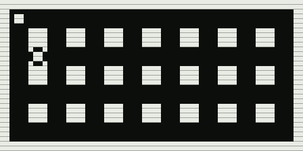

Mine Field
Graeme V. Samways · DREAMER no. 2 (1980-10) p. 10 1K RAM


Cross a grid from the top left corner to the bottom right while avoiding 10 hidden mines. Stepping on a mine adds one to your score, leaves a marker you cannot cross and sends you back to the start. The lower the score at the far corner, the better.
Keys
5 up, 8 left, A right, D down.
Files
| File | Version | Load | Run |
|---|---|---|---|
| Mine Field.c8 | main | 0200-037F | C000 |
Listing as transcribed (with notes): mine_field.txt
Source
DREAMER no. 2 on archive.org, p. 10 (PDF page 10). Author: Graeme V. Samways.
Corrections applied
None.
Open doubts
None.